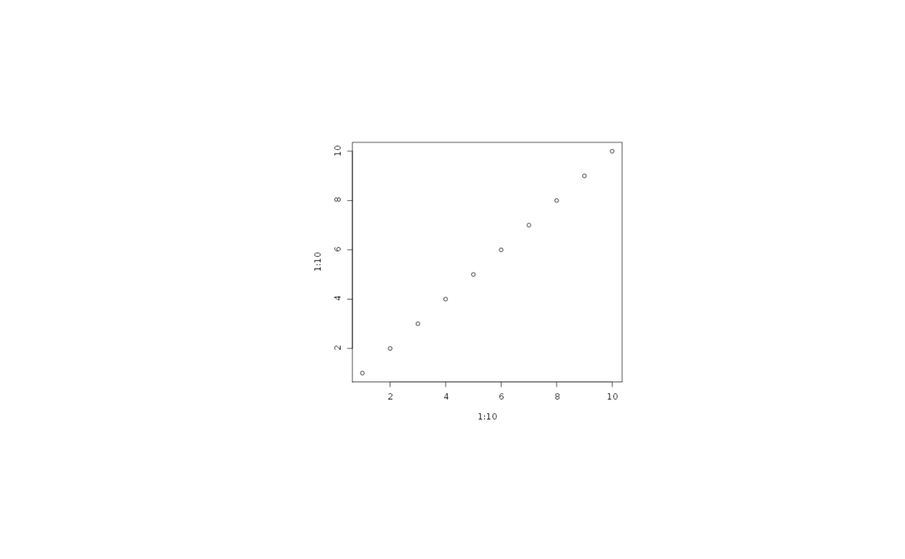

agg_capture.RdUsually the point of using a graphic device is to create a file or show the graphic on the screen. A few times we need the image data for further processing in R, and instead of writing it to a file and then reading it back into R the `agg_capture()` device lets you get the image data directly from the buffer. In contrast to the other devices this device returns a function, that when called will return the current state of the buffer.
agg_capture(width = 480, height = 480, units = "px", pointsize = 12, background = "white", res = 72)
| width | The dimensions of the device |
|---|---|
| height | The dimensions of the device |
| units | The unit `width` and `height` is measured in, in either pixels (`'px'`), inches (`'in'`), millimeters (`'mm'`), or centimeter (`'cm'`). |
| pointsize | The default pointsize of the device in pt |
| background | The background colour of the device |
| res | The resolution of the device. This setting will govern how device dimensions given in inches, centimeters, or millimeters will be converted to pixels. Further, it will be used to scale text sizes and linewidths |
A function that when called returns the current state of the buffer. The return value of the function depends on the `native` argument. If `FALSE` (default) the return value is a `matrix` of colour values and if `TRUE` the return value is a `nativeRaster` object.
cap <- agg_capture() plot(1:10, 1:10) # Get the plot as a matrix raster <- cap() # Get the plot as a nativeRaster raster_n <- cap(native = TRUE) dev.off()#> pdf #> 2